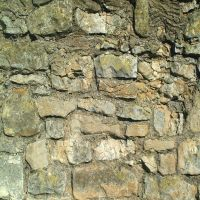
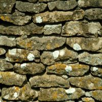
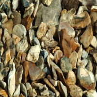
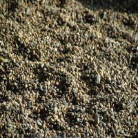
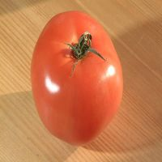

| Sauvegarder l'image ci-contre sur votre compte (clic droit sur l'image). Lire et afficher cette image sous Matlab à l'aide de la commande imread : img = imread('Images/45.jpg'); image(img); Exécuter la commande size(img) et commenter les résultats. La matrice img est une matrice 3D contenant des valeurs comprises entre 0 et 255 codées sur 1 octet. |
|  |  | |||||
|  |  | |||||
|  | ||||||
|